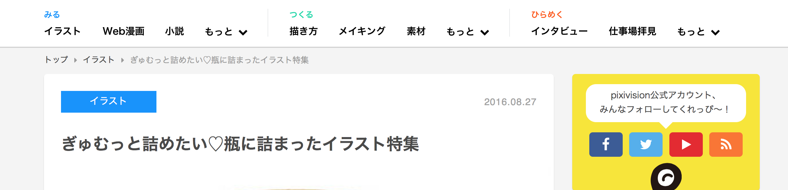
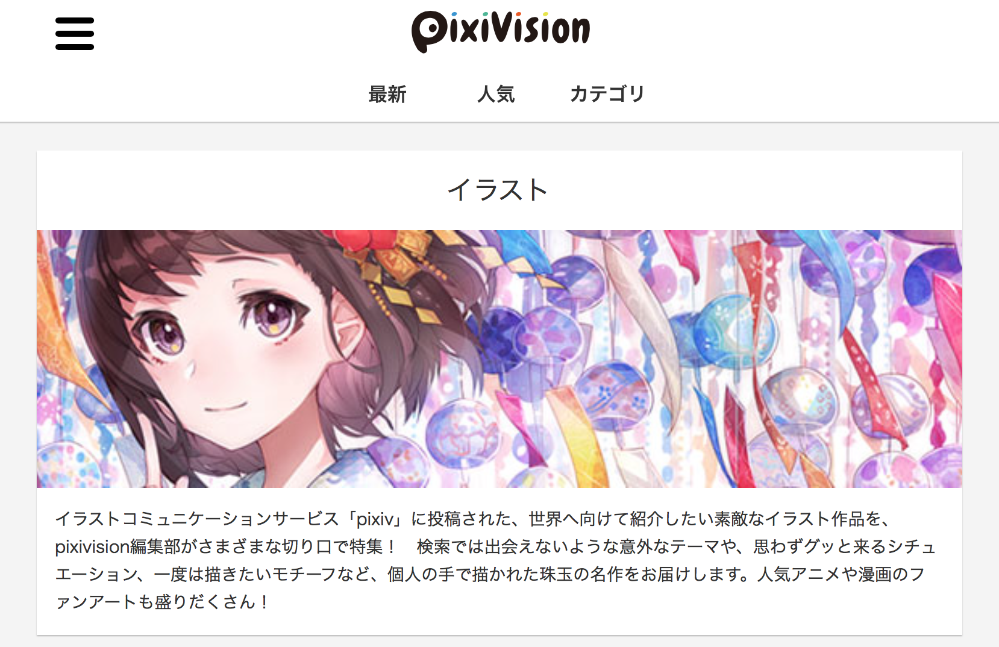
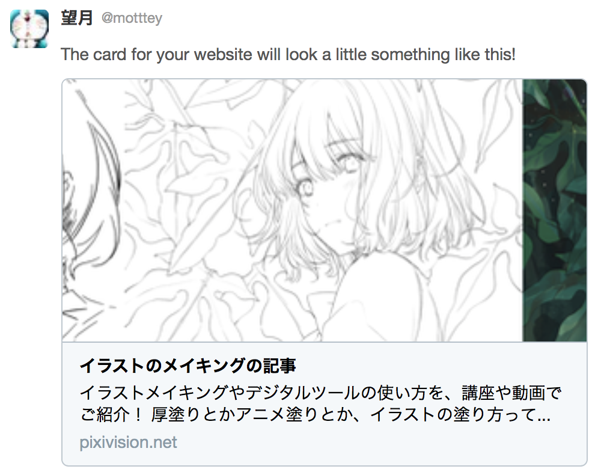
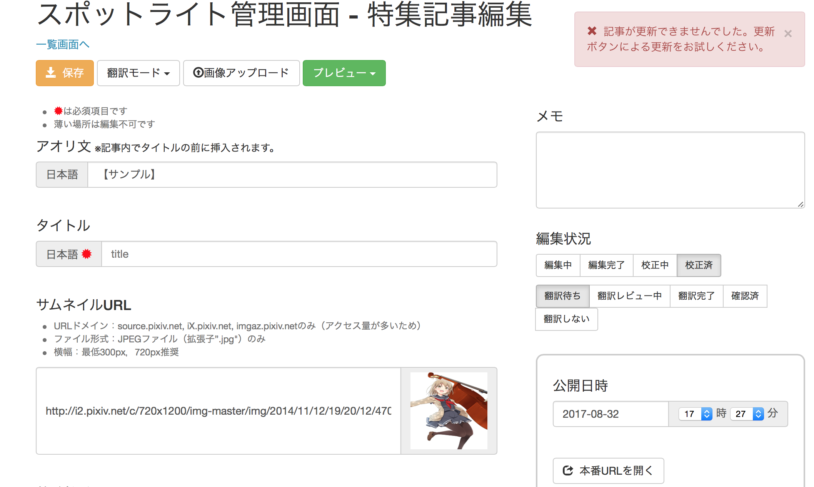
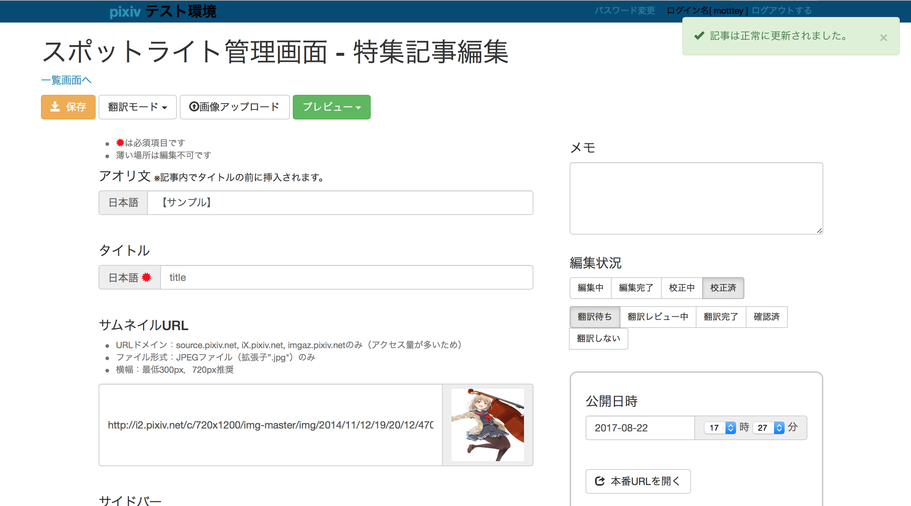
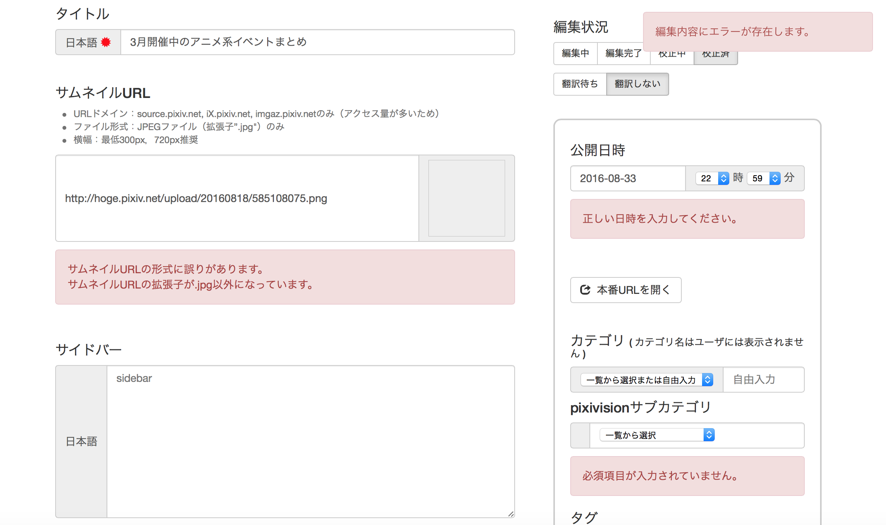

pixiv 2016
SUMMER BOOT CAMP
成果発表
首都大学東京 システムデザイン学部 B3
高見 玲 @motttey
行ったこと
- チーム作業上の実際の要求へ向けた機能設計
- 機能の実装とリファクタリング
- デプロイ
実際の作業内容
- HTMLの記事タイトル要素の出力形式の変更
- サブカテゴリのTwitter-Card作成
- 記事作成画面のエラー表示形式の改善
HTMLの記事タイトル要素の
出力形式の変更
記事中のタイトル
ぎゅむっと詰めたい♡瓶に詰まったイラスト特集
検索結果, 履歴(HTMLタイトル)
瓶に詰まったイラスト特集ぎゅむっと詰めたい♡
- pixivision(ピクシビジョン)
HTMLタイトルの表示が不自然
-
煽り文あり
瓶に詰まったイラスト特集 - ぎゅむっと詰めたい♡
- pixivision(ピクシビジョン) -
煽り文なし
瓶に詰まったイラスト特集 - pixivision(ピクシビジョン)
処理の関数化
public static function generateMetaTitle($page, $lang, $pure_title, $catchphrase)
{
//複数ページのときハイフンを追加
if ($page > 1) {
$title_prefix = Lang_LocaleLang::getTrans($page . 'ページ', 'preg', $lang) . ' - ' ;
} else {
$title_prefix = '';
}
//キャッチフレーズが存在するとき追加
if ($catchphrase) {
$title_suffix = ' - ' . $catchphrase;
} else {
$title_suffix = '';
}
return $title_prefix . $pure_title . $title_suffix;
}
サブカテゴリのTwitter-Card
要求
コミュニティマネージメントチーム
SNSでカテゴリタグをシェアする施策
Twitter-Cardが表示されず、誘目性が低い

手法
サブカテゴリについてTwitter-Cardの内容を作成 記事作成画面の
エラー表示形式の改善
現状の記事作成画面
問題点
- エラーメッセージからエラーの発生位置を特定できない
- 複数エラーが発生しても単一のメッセージしか発生しない
- 対応していないエラーケースが存在
問題点の改善
エラー内容をライターや業者が判別可能
今後のpixivisionの発展に貢献
(作業時間の短縮, ライターの増員)
手法
- 複数のエラーケースの同時発生に対応
- エラー発生箇所にエラー内容の詳細を表示
- 対応するエラーケースを増やした
正常時
エラー発生時
まとめ
- チーム作業上の実際の要求へ向けた機能設計
- 機能の実装とリファクタリング
- デプロイ